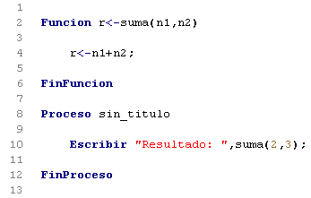
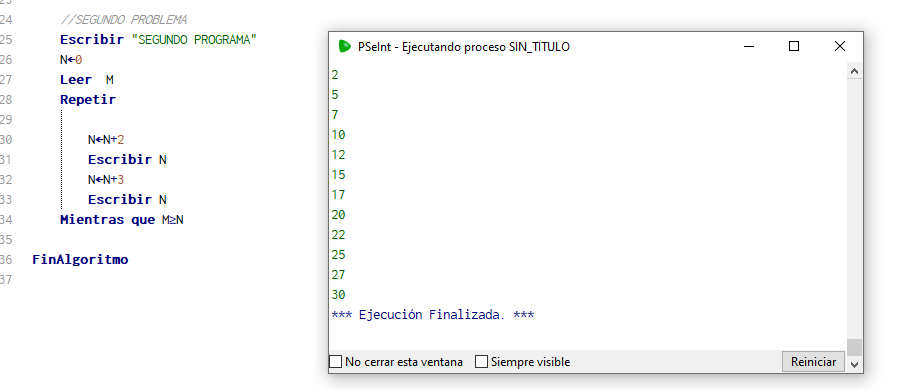
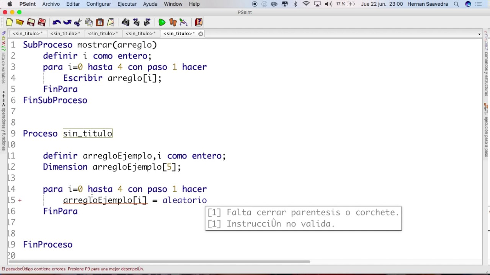

Ejercicio de funciones
Proyectos Pseint1. Organizar todos los puntos del taller de condicionales en modo funciones.
Ver codigo, punto 1 y 2, cálculo de edades. Ver codigo, punto 3, cálculo de edades con mensaje. Ver codigo, punto 4, aplicación video tienda. Ver codigo, punto 5, plataforma de droguería. Ver codigo, punto 6, plataforma de taller de motos. Ver codigo, punto 7, cálculo de IMC. Ver codigo, punto 8, aplicación de pastelería. Ver codigo, punto 9, cálculo de áreas. Ver codigo, punto 10, cálculo de ingresos y egresos.
2. Organizar los puntos 6, 7 y 8 del taller de ciclos en modo funciones.
Ver codigo, punto 6, contactos telefónicos. Ver codigo, punto 7, registro parqueadero. Ver codigo, punto 8, plataforma curso.
3. Organizar todos los puntos del taller de arreglos en modo funciones.
Ver codigo, punto 1, lista simple. Ver codigo, punto 2, números enteros. Ver codigo, punto 3, números primos. Ver codigo, punto 4, matriz bidimensional en orden variado. Ver codigo, punto 5, matriz bidimensional de multiplicación.